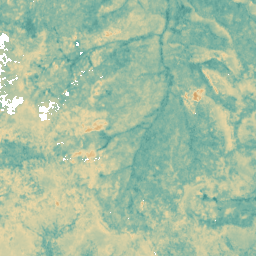
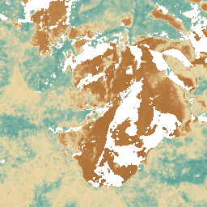

卫星火区识别
切换真实卫星影像，比较 AI 圈出的疑似火区与专家标注。
U-Net / 20 m
影像对照
↑ N
Bear Creek · 事件复核


观测依据与来源
中图橙色为当天预测，青线为 MTBS 最终边界。前后两图用同一 NBR 色标，棕色为低值，蓝绿色为高值，空白处缺测。
Contains modified Copernicus Sentinel data 2020.影像与判定方法
- 切片编号
- 观测时间
- 有效观测
- 模型输入
- B12、B11、B8A 三个波段，20 米网格。任一波段为零时跳过该像素。
- 判定依据
- 模型得分大于 0.5 时判为疑似活动火。只有评估阶段使用人工标注。页面初次显示本地实测结果，点击运行后使用原模型权重在浏览器内独立计算。